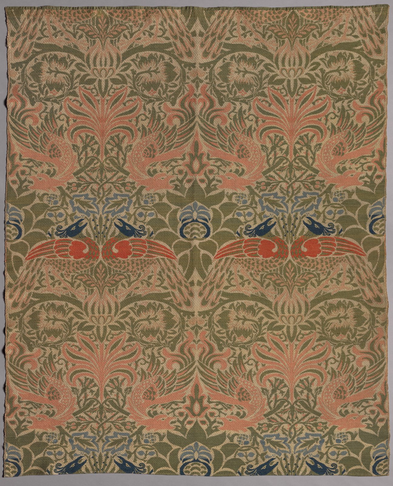

References / Textile / 296
Peacock and Dragon woven wool
A heavy woven wool hanging by William Morris in which peacocks, dragons, and palmettes mirror each other in a strict, static repeat.
- Source
- Cleveland Museum of Art: Peacock and Dragon, 1953.330
- Creator
- William Morris
- Made
- 1878
- Style
- Arts and Crafts (agent-proposed, not yet reviewed by a person)
- Moods
- Dense, medieval, warm
- Evidence
- Downloaded and inspected the Cleveland Museum of Art open-access image of object 1953.330 (2752 × 3400 px).
- Reviewed
- Rights
- Open license, stored. License: CC0-1.0. Rights policy
Context
Cleveland describes it as a weft-faced compound twill in wool, 206.6 × 174.7 cm, woven at Merton Abbey, Surrey, in 1878. Cleveland Museum of Art.
Morris wanted textiles that worked like medieval wall hangings and brought warmth to cold rooms; Cleveland calls this one the closest he came to that ideal. A room from Damascus that he saw at a London dealer the same year partly inspired the motifs. Cleveland Museum of Art.
The design was sold in five colourways. George Willis Pack bought this piece between 1878 and 1886 for his house on Euclid Avenue, Cleveland. Cleveland Museum of Art.
Observed
- Two large birds with spread wings face each other across a central palmette; the whole field is a mirror-symmetrical repeat, two units wide.
- A band of red-winged birds with dark blue heads crosses the middle of each unit.
- Colours are olive and sage green, salmon pink, a stronger red, and slate and dark blue on a cream ground.
- Stems, leaves, and feathers are flat shapes with no shading. The twill weave gives a diagonal texture to every colour.
- Plain ground shows only as thin lines around the shapes.
Why it belongs
The piece matches the rubric’s dense, symmetrical, lattice-based repeat, but its colours are softer and lighter than the deep indigo of the printed cottons.
The layout comes from medieval and Near Eastern woven silks, which fits the movement’s look back to pre-industrial models.
Borrow
Build a large mirrored unit around a central plant and cross it with a narrow band of smaller motifs.
Use a soft green and salmon palette with one small, stronger red accent.
Measured
Machine-extracted by tools/image-traits.py on . Full measurement.
- Mean chroma
- 0.18
- Palette
- #655c40 22%
- #907d60 19%
- #a08868 17%
- #756547 12%
- #a46d53 8%
- #827153 7%
- #8e8a8b 3%
- #a59fa0 3%

